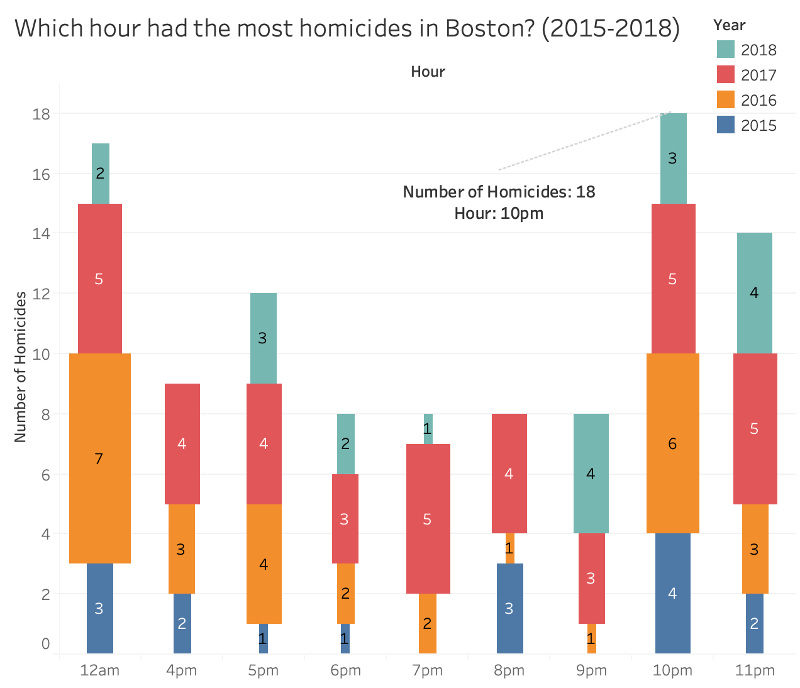
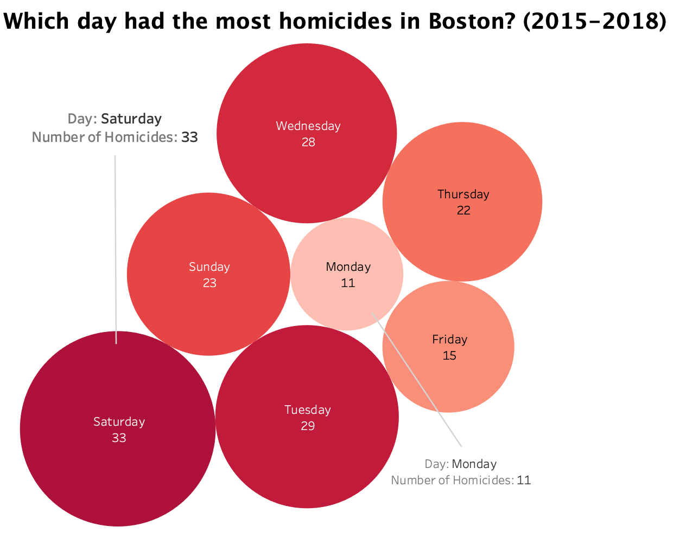

CSC 196V Final Project: Homicides in Boston
By: Roberto Campos & Jonathan Ruidera
Data Used: https://www.kaggle.com/AnalyzeBoston/crimes-in-boston
It’s easy to not pay attention to your surroundings, which decreases your awareness and increases the risk of getting into trouble. The data set we explored contained various crimes, but in the end many crimes lead to homicides. We took the chance to explore the year, month, day, hours, and locations that had the most homicides. In the following graphs, one can observe and view the answers to these questions. We also encourage viewers to seek their own interpretations and analyze other data sets to compare the findings and see the accuracy of our results. The hope of this analysis to give the reader a better understanding and awareness of which times are the most dangerous to walk around Boston. The dataset contains data collected from July of 2015 to August of 2018.

↑
The most popular time for homicides to occur is 10 p.m. followed by 12 a.m. The least likely hour in which a homicide can occur seems to be around 7 a.m. The data seems to suggest that night time increases the potential for crimes such as robbery and assault to happen, which in return increases murders. But there can be other factors such as the use of drugs at night time.
↓

↑
Most homicides tend to happen on Saturday with 33 homicides followed by Tuesday with 29 homicides. Surprisingly, Fridays have the second least Homicides of all the days. Monday only has 11 homicides out of all the years. There is no information on why those days have the most homicides, but one can speculate the reason as to why those day are the days with the most homicides.
↓
Which day had the most homicides?
↑
Tuesday and Wednesday are almost mid-week. After resting Monday, from all the activities on Saturday and Sunday, Tuesday may seem like a great week to confront problems. Wednesday is right in the middle of the week which may cause thing to get tense. Friday is typically payday. Giving someone a reason to ask for owed money the next day on Saturday, and not paying causing conflict to escalate which may give someone a reason to put a bullet in your head.
↓
Which month had the most homicides?
↑
July is a very active month for homicides in Boston. Between 2015 to 2018, July has totaled 22 homicides. In 2016 there was only 1 homicide, the year before in 2015 there was 8 homicides and the year after in 2017 there was 7 homicides. What happened in July 2016? Why is July a popular month to commit such crime? July is the peak of summer. The rise in temperature influences individuals to leave their homes and roam outside engaging in summer activities such as drinking at a neighborhood cook out on July 4th. Day light hours increase as well, elongating the day for more potential fun activities. One of the biggest factors may be that students are on summer vacation. But, why did July 2016 only have one homicide? Could it have been the release of Pokémon Go or Stranger Things that may have caused people to be entertained in July 2016?
↓
↑
Roxbury, Dorchester, and Mattapan seem to be the areas with the most homicides. According to cityofboston.gov these are demographics for Roxbury in 2010: White – 6.6%, Black or African American – 55.6%, Hispanic or Latino – 29.8%. The median annual income is $30,654 and over half the population is ages 25-64. Demographics can play a big part in why homicide rates are higher in those areas.
↓
Summary
Roxbury and Dorchester are dangerous areas, which increases in the summer time as it can be seen in the previous visualizations. The days with the most homicides in total are weekends and typically most homicides happen between 10 p.m. an 12 a.m. in the morning. So, decrease your chances of getting into trouble and keep those times in mind when you’re in Boston. There can be other correlations between homicides and other types of crimes such as drug incidents, robbery, prostitution, etc. The data used also contained weapon reports which in return can tell us which weapons were most likely used to cause the homicides. The data can potentially help cops and other protection services allocate their services at the particular days and times in which surveillance is truly needed. Keep in mind that data changes as factors change or events take place. If changes are made such as increasing surveillance at such days and hours, in the next years data, the results will be able to be seen and adjustments can be made. Although crime will always happen no matter how much adjustments are made, data informed decisions can better help situations such as the example mentioned above.
Top